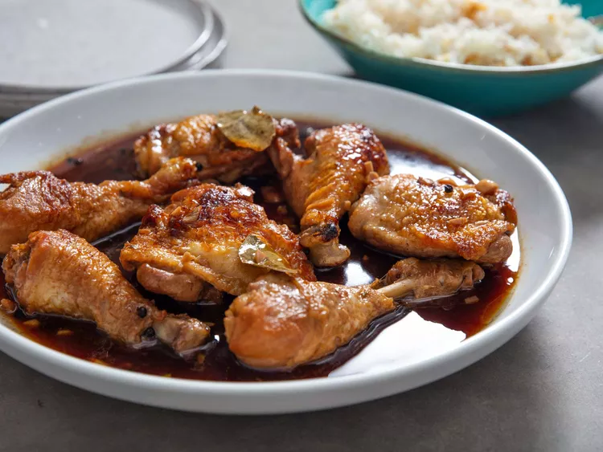

The Philippines' most iconic dish: Adobo(Chicken)
Return to list

Short description
Philippine adobo (from Spanish: adobar: "marinade", "sauce" or "seasoning"
English: /əˈdoʊboʊ/ Tagalog pronunciation: [ɐdobo]) is a popular Filipino dish and cooking process in Philippine cuisine.
In its base form, meat, seafood, or vegetables are first browned in oil, and then marinated and simmered in vinegar, salt and/or soy sauce, and garlic.
It is often considered the unofficial national dish in the Philippines.
Ingredients
- Chicken (cut into serving pieces)
- Soy sauce
- Vinegar
- Garlic (minced or crushed)
- Bay leaves
- Black peppercorns
- Onion (optional, sliced)
Steps to prepare
- In a bowl, combine the chicken pieces, soy sauce, garlic, onion, peppercorns, and bay leaves.
Massage the marinade into the chicken and let it sit for at least 30 minutes, or overnight for more flavor.
- Heat the oil in a large pan over medium heat.
Remove the chicken from the marinade (but save the marinade!)
and brown the pieces in the hot oil, about 3-5 minutes on each side, until golden.
- Once the chicken is browned, pour in the vinegar and let it simmer for about 2-3 minutes (don’t stir immediately to preserve the vinegar’s tangy flavor).
Then, add the reserved marinade back into the pan, along with the bay leaves.
- Add 1/2 cup of water (optional, for a more sauce-heavy adobo). Let the mixture come to a boil,
then lower the heat and simmer for 30-40 minutes until the chicken is tender and the sauce has reduced and thickened. Stir occasionally.
- Taste the sauce and add salt and pepper to your preference. Serve the chicken adobo with steamed rice. Enjoy the rich, tangy flavor!
Return to List